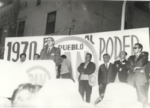

Fundación Miguel Estrada Iturbide
Historia
"Mientras México no se comprenda a sí mismo, mientras no revise sus antecedentes, mientras no vuelva a pensar sobre su propio pensamiento, no se ve cómo pueda construirse una nación... hay que repensarnos... no seguir llamándonos liberales o conservadores, revolucionarios o reaccionarios, marbetes sin sentido... sino empeñarnos lealmente, generosamente, en la reconstrucción de México"
En la LV Legislatura de la Cámara de Diputados, 89 diputados integrantes del grupo parlamentario de Acción Nacional, coordinados por Diego Fernández de Cevallos y, posteriormente, cuando éste fue postulado por el PAN candidato a la Presidencia de la República, por Gabriel Jiménez Remus. Ambos coordinadores del GPPAN junto con Carlos Castillo Peraza, Presidente del PAN, impulsaron la creación de la Fundación Miguel Estrada Iturbide (FMEI), a efecto de profesionalizar el trabajo legislativo, con base en la asesoría técnica de un cuerpo de especialistas.
A partir del 19 de octubre de 2004, fecha de su creación, la Fundación Miguel Estrada Iturbide A.C., cuyo nombre honra a uno de los fundadores y legisladores más sobresalientes de Acción Nacional, ha brindado asesoría a los integrantes de los Grupos Parlamentarios del PAN, los cuales han impulsado el crecimiento y consolidación del quehacer parlamentario y que gracias a la visión que el partido tuvo desde entonces, la Fundación hoy cuenta con especialistas en diversas materias relacionadas con las comisiones legislativas de la Cámara de Diputados.
En el acto de su creación, Don Gabriel Jiménez Remus, quien era el coordinador del Grupo Parlamentario del PAN en la LV Legislatura, propuso que la asociación civil honrara el nombre d un distinguido fundador del Partido Acción Nacional parlamentario sobresaliente, demócrata y jurista servidor de las mejores causas: Miguel Estrada Iturbide, nacido el 17 de noviembre de 1908 en la ciudad de Morelia, Michoacán, donde comenzó sus estudios en derecho en la escuela libre y, cuando ésta fue clausurada por Lázaro Cárdenas, entonces gobernador de Michoacán, los concluyó en la Universidad de Guanajuato, que le otorgó el titulo de abogado en el año de 1932.
Miguel Estrada Iturbide escribió algunas de las intervenciones más sobresalientes del PAN en la Cámara Baja; contendió por ocupar un escaño en la Cámara de Diputados en 1943, pero fue en 1946 cuando ganó, para así formar parte de los 18 primeros diputados de Acción Nacional, integrantes de la XLVI Legislatura en la Cámara Baja. En ella, Estrada Iturbide fue reconocido como uno de los mejores oradores, se hablaba de él como un parlamentario de altura, estudioso y eficaz con base en los debates que sostuvo en relación con el Presupuesto Federal, con la derogación del delito de disolución social, con el problema educativo y con la reelección de legisladores, tema que debatió con Vicente Lombardo Toledano. Además, Estrada Iturbide fue el primer representante de Acción Nacional en la Vicepresidencia de la Cámara de Diputados.
Al reconocer en Miguel Estrada Iturbide a uno de los fundadores más destacados de Acción Nacional y a uno de los legisladores más ilustres del partido, el Grupo Parlamentario del PAN en la LV Legislatura decidió honrarlo dando su nombre a la Fundación encargada de asesorar técnicamente a los diputados federales de Acción Nacional.
Desde ese entonces, la Fundación Miguel Estrada Iturbide trabaja en coordinación con el Grupo Parlamentario del PAN, con el propósito fundamental de contribuir a la profesionalización y especialización de los legisladores del PAN a efecto de garantizar su desempeño en el ámbito del Poder Legislativo.